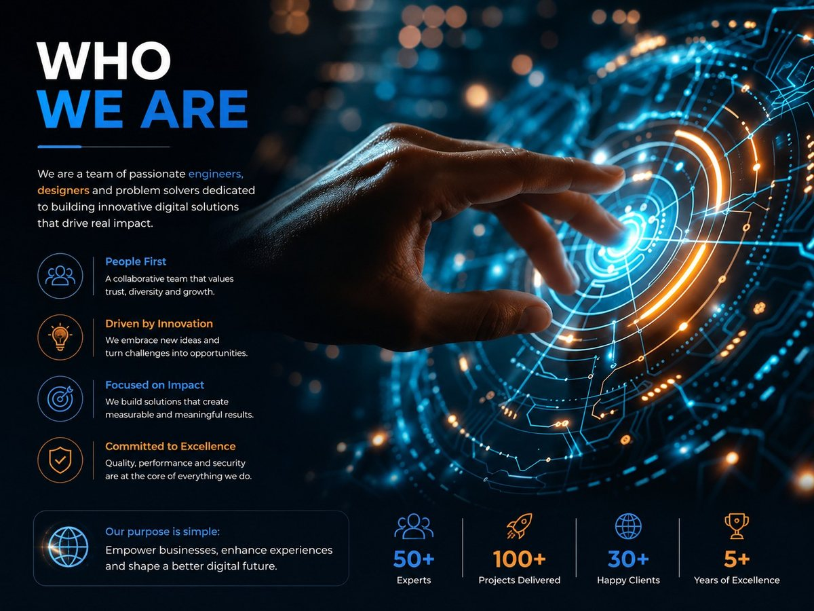

Keeping Software Reliable, Secure and Improving
Launch is the start. Browsers update, devices change, security issues surface and your own requirements move — maintenance is what keeps software useful through all of it.

Covering websites and applications alike
Maintenance applies to a business website, a web application, a mobile app or installed desktop software. What changes is the rhythm: a website may need content and security updates, an application needs dependency upgrades and fixes as people use it in ways nobody predicted.
We also take on software built by someone else, where the code is in a reviewable state. That starts with an assessment rather than a promise.

Diagnosis, fixes and updates
The core of any maintenance arrangement: something is wrong or out of date, and it gets investigated properly rather than patched over.
Security, performance and configuration
The work that keeps software safe and quick as content grows and the surrounding platforms change underneath it.

Enhancements and taking over existing software
Real use always reveals improvements worth making — and sometimes the software that needs looking after was built by somebody else.
Keep your software reliable as your business changes
The work that keeps something built last year still working properly this year.
Faults Fixed at the Cause
Something is reported, reproduced and traced to why it happens — rather than patched at the surface and reported again next month.
Compatibility Kept Current
Browsers, phone operating systems and Windows all move. So do the libraries underneath your software. Keeping up is steady work, not an emergency.
Security Patched, Not Deferred
Known vulnerabilities in dependencies are applied and tested as they appear, and backups are verified rather than assumed.
Performance as Data Grows
A system that was quick with a thousand records is not automatically quick with a hundred thousand. Queries and indexes are tuned as volume builds.
Small Improvements Worth Making
Real use exposes the field everyone wants added and the screen that takes three clicks too many. These go in as ordinary maintenance work.
Assess, prioritize, improve and monitor
Including for software somebody else built, where the code is in a reviewable state.
Assess
Review what exists
Agree Scope
Coverage & response
Prioritise
What matters first
Change
Fix & improve
Test
Before anything goes live
Monitor
Watch the result
Review
Check in periodically
When maintenance needs a larger next step
Most requests stay maintenance work. Occasionally one is genuinely a project — and it is worth saying so rather than stretching a support arrangement around it.
Custom Software
When a request is a new capability rather than a fix — a module the system never had — it is scoped and quoted as a piece of work, not absorbed quietly.
Web Applications
When a process has outgrown the spreadsheets and manual steps that maintenance keeps propping up, the honest answer is a system for it.
Mobile Applications
When customers or field staff need the software away from a desk, and the current site is being stretched to cover a job it was not built for.
Desktop Applications
When local files, attached hardware or working through an outage have become requirements that a browser-based system cannot meet.
Tell us what needs looking after
Whether we built it or not, describe the software and what is going wrong or going stale. We will start with an honest assessment.
Discuss Ongoing Support